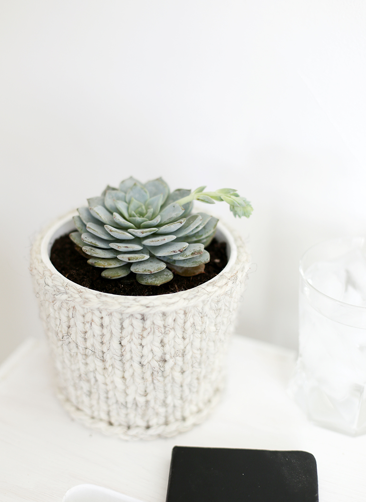

DIRECTIONS
Cast on 24 stitches using the crochet cast on method. (Increase or decrease based on circumference of the base of your planter.)
1st row – knit 24
2nd row – purl 24
3rd row – knit 24
4th row – purl 24
5th row – knit 24
6th row – purl 24
7th row – knit 24
8th row – increase once, purl rest of row 25 stitches
9th row – increase once, knit rest of row 26 stitches
10th row – purl 26
11th row – knit 26
12th row – increase once, purl rest of row 27 stitches
13th row – increase once, knit rest of row 28 stitches
14th row – increase twice, purl rest of row 30 stitches
15th row – increase twice, knit rest of row 32 stitches
16th row – increase once, purl rest of row 33 stitches
17th row – cast off leaving long end for sewing together
Sew the two edges together using tapestry needle.

Keep those plants cozy!
